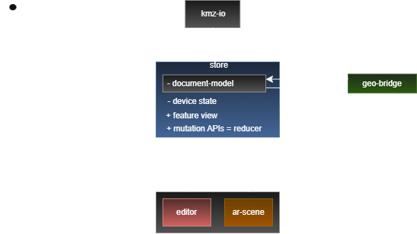

Location-Based WebXR
KML / KMZ Editor
A comprehensive walkthrough of our lab work: project motivation, system architecture, KML losslessness, key challenges, and results.
Why We Built This System
Bridging traditional desktop KML/KMZ GIS files with mobile browser AR.
Load, view, and edit geographic KML/KMZ files directly in the browser and inspect features anchored at real GPS positions on mobile devices.
Lossless round-trip: edit coordinates on mobile or desktop and reopen the file in Google Earth with 100% of original tags preserved.
Only the coordinates of the marker are changed in the AR view — all other tags remain byte-identical.
<Placemark>
<name>Sensor_042</name>
<description>Battery: 78%</description>
<coordinates>13.4050,52.5200,0</coordinates>
<ExtendedData>
<Data name="battery">
<value>78</value>
</Data>
</ExtendedData>
</Placemark><Placemark>
<name>Sensor_042</name>
<description>Battery: 78%</description>
<coordinates>13.4061,52.5210,0</coordinates>
<ExtendedData>
<Data name="battery">
<value>78</value>
</Data>
</ExtendedData>
</Placemark>Core Components & System Structure
Clear functional breakdown of each module and how data flows through the application.
- Parses raw KML XML into an in-memory document tree.
- Tracks exact character range offsets for coordinates in XML text.
- 100% Losslessness: editing coordinates preserves all unedited tags & styles.
- Opens and unzips compressed .kmz archives in memory.
- Extracts doc.kml, images, and COLLADA .dae 3D models.
- Provides temporary Blob URLs so Three.js can load textures.
- Converts WGS84 GPS (Lat, Lon) to 3D Cartesian meters (North, Up, East).
- Handles KML altitude modes (clampToGround, relativeToGround, absolute).
- Bi-directional: converts 3D meter drags back into micro-degrees of GPS.
- Converts abstract KML features into 3D Three.js visual objects.
- Renders Pin Markers, 3D Polylines, 2D GroundOverlays & 3D COLLADA models.
- Uses an in-memory TextureCache to prevent duplicate GPU memory leaks.
- Central Redux state store managing the active document & device state.
- Tracks selected feature IDs, dirty save flags & active sensor state.
- Connects reducer mutation APIs to trigger UI and 3D scene re-renders.
- Encapsulates edit actions into atomic, reversible command objects.
- Executes spatial edits (moving markers) and text property edits.
- Maintains an Undo/Redo stack for Ctrl+Z / Ctrl+Y.
- Auto-saves modified KML/KMZ contents back to local file system.
- Uses a 500ms debounce timer to wait until dragging finishes before saving.
- Ensures exported files open seamlessly in Google Earth or QGIS.
- Desktop 3D map viewport with OrbitControls for panning and zooming.
- Sidebar tree view showing all KML folders, features, and layers.
- Property inspector panel for editing names, descriptions & coordinates.
- Mobile AR camera view with WebXR or Gyroscope sensor fallbacks.
- Anchors KML features to real GPS locations in the smartphone camera view.
- Includes Mock GPS toggle to test field features at eye-level at your desk.

Lossless KML Editing Example
Only the exact target coordinates change in the XML text — everything else remains untouched.
- The Problem with XML Parsers: Normal XML parsers re-serialize the whole document, deleting custom Google Earth tags, styles, and comments.
- Our Solution: We keep the raw KML string intact and find exact character range offsets for <coordinates>.
- Exact Substring Swap: Moving a marker replaces only the coordinate text in the raw file.
Three.js Asset Renderers (plan.md Specs)
Rendering Pin Markers, Lines, GroundOverlays, and 3D COLLADA models - Component 4.
- Marker Renderer: Custom map pins & canvas icon sprites positioned in 3D meter space.
- Line Renderer: 3D polylines with configurable stroke width, color, and altitude mode.
- GroundOverlay Renderer: 2D image overlays mapped onto terrain coordinates (bounding box).
- COLLADA 3D Model Renderer: Loads .dae 3D models with embedded textures via ColladaLoader.
- VRAM TextureCache: Reuses shared materials and textures to prevent memory leaks on GPU.
Detailed Execution Flow
How a user gesture triggers commands, spatial math, AST text editing, and debounced auto-save.
Desktop Editor Live Preview
Live interactive preview of the desktop editor suite.
- Interactive 3D Map: OrbitControls for navigating around KML features.
- Sidebar & Inspector: Feature tree view and property editing panel.
- Undo / Redo: History stack supported via Ctrl+Z / Ctrl+Y.
Mobile XR Editor Preview
To be addedLab Challenges & Honest Learnings
Obstacles we faced during development under heavy workload.
Challenge: Developing complex modules rapidly with heavy AI assistance made it difficult to gain deep, complete understanding of every underlying code layer under tight time constraints.
Challenge: Positioning markers accurately in AR proved problematic. Framework positioning functions were not utilized correctly by our viewer layer, overcomplicating position calculations.
Status: Unresolved due to time constraints; fixing this properly would require refactoring the viewer layer from scratch.
Lab Successes
What went well during development.
Individual components (parser, math bridge, renderers, store) were created quickly and modularly, establishing a clear separation of concerns across the system.
The lossless editing mechanism works reliably: modifying coordinates in our app updates only the target values, leaving all other XML tags and styling intact when reopened in external tools.
Recap & Discussion
5-Minute Q&A Session